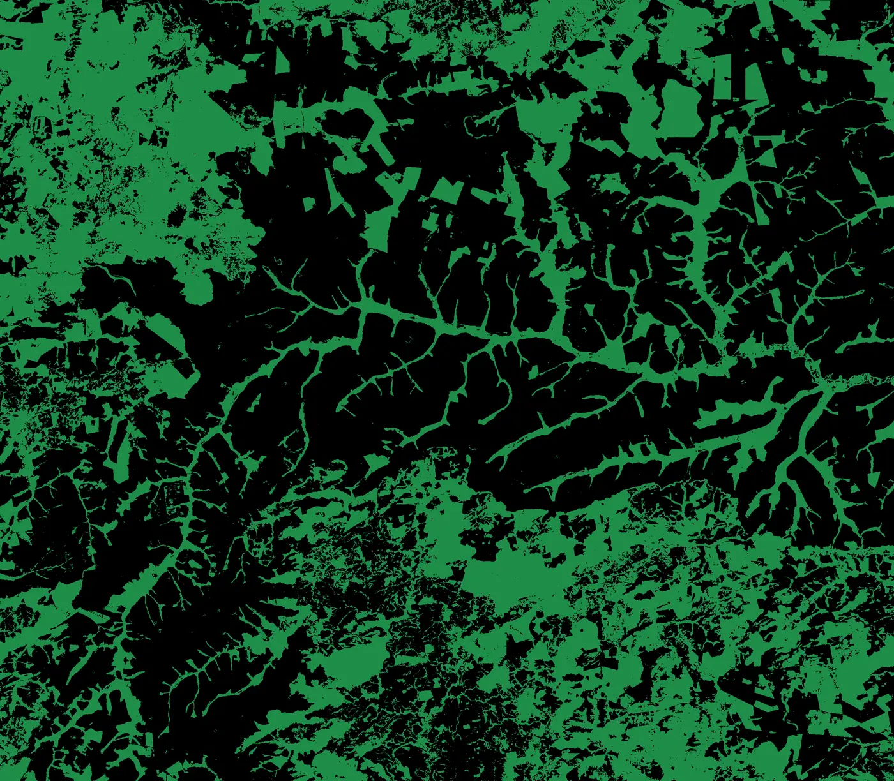
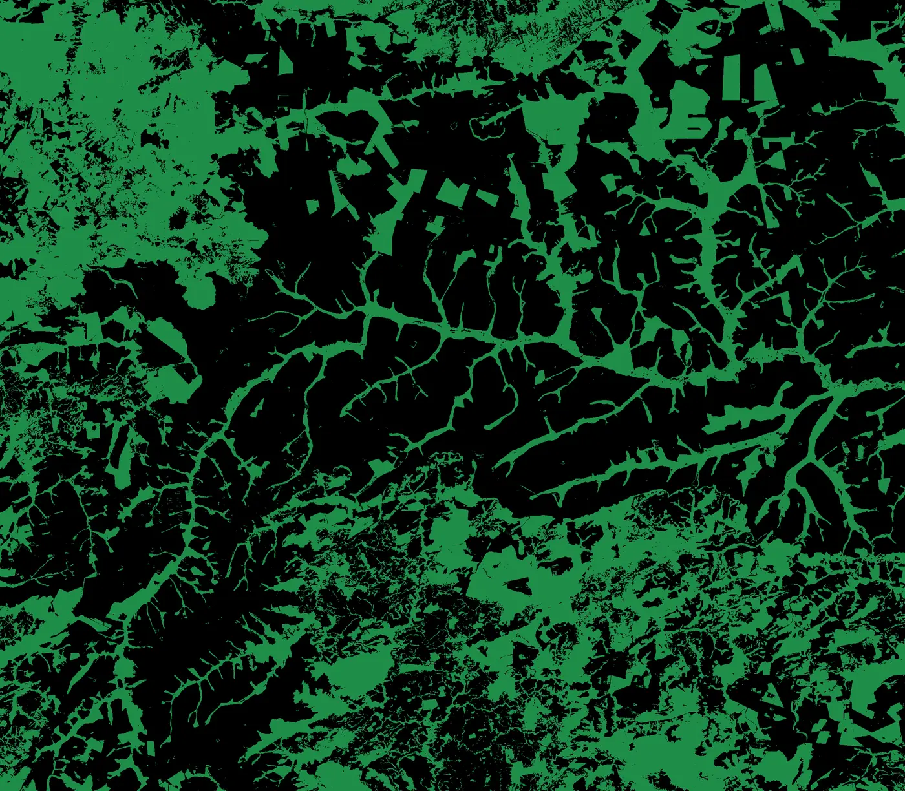
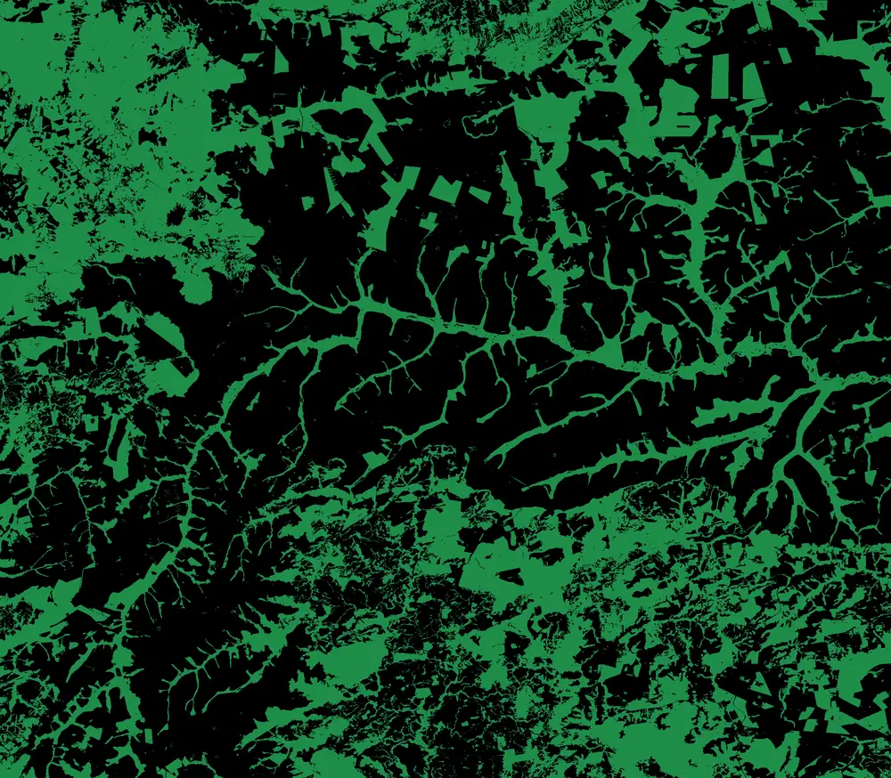
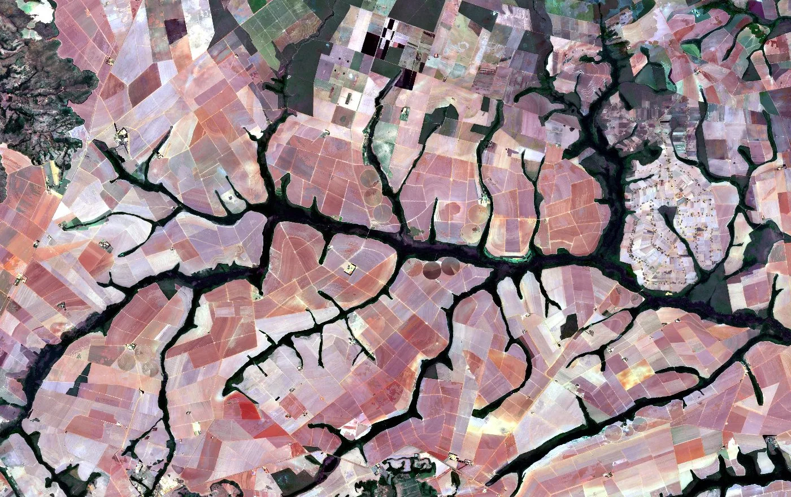
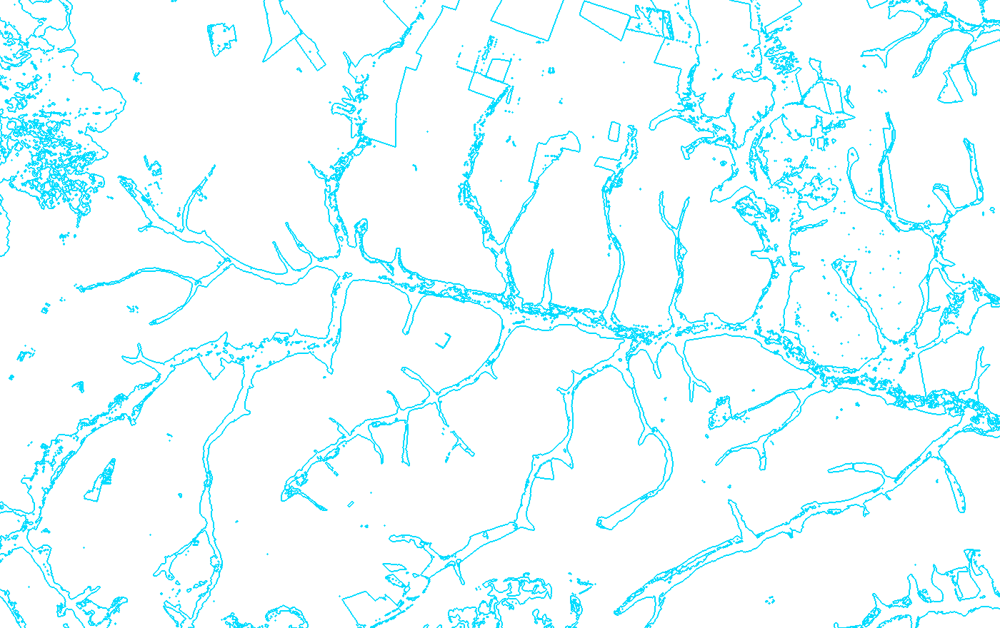
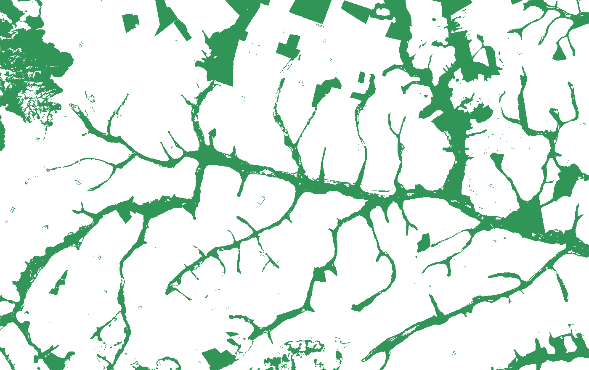
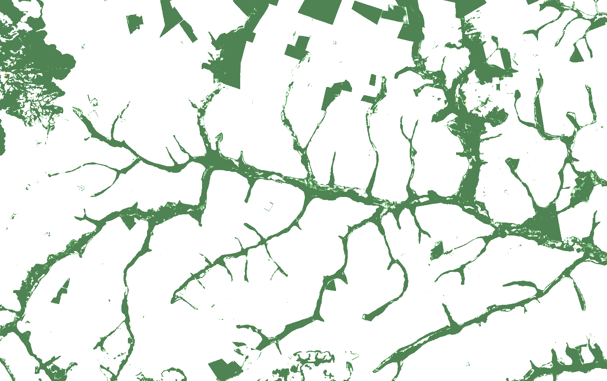
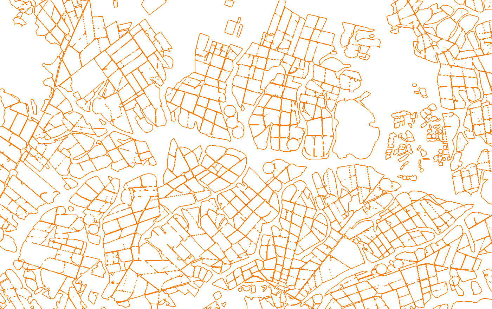

Research
Five application areas and eight methodological lines
The laboratory's research is organized around two complementary axes: five application areas (Agriculture, Forests, Climate, Cities, and Technical and institutional documents) and eight methodological research lines addressing challenges such as learning with limited labels, domain adaptation, uncertainty modeling, textual data, and networks of specialist models.
Members of the group work across these two axes in three complementary ways: some researchers focus exclusively on developing foundational methodology; others develop the method and apply it directly within an application area; and in many cases, a methodological advance created by one researcher is adopted by a colleague and carried into the application areas and partnered projects.
Agriculture
Automated plot boundary delineation, crop classification combining radar and optical imagery, vegetation index time series extraction, start and end of season detection, neighborhood-relative agricultural risk reading, and soil nutrient stock dynamics.
Stage 1 · Plot delineation and crop classification
The agriculture area is explored in the Territorial AgroIntelligence project in partnership with FGV Agro, in which we build territorial intelligence across large agricultural portfolios to answer what is planted, where it is located, and which plots behave outside expected patterns. The first stage of the workflow delineates productive plot boundaries and identifies the planted crop in each subarea.
Over the course of the project, the laboratory built an in-house dataset of 359,596 delineated and classified plots by planted crop (soybean, corn, and cotton), regenerated every season across 897 municipalities in five Brazilian states (Bahia, Maranhão, Mato Grosso, Paraná, and Tocantins), covering the 2020 to 2025 crop seasons. The method combines automatic segmentation on optical imagery with crop classification on synthetic aperture radar (SAR), which penetrates clouds and provides continuous observation during rainy months.
Validated against INPE field data in Campo Verde (MT), the laboratory's classifier outperforms the public reference (MapBiomas) on second-season crops whose calendar coincides with persistent cloud cover: it achieves 91.5% accuracy versus 82.4% in corn and 90.0% versus 64.4% in cotton, while maintaining 98.7% in soybean (versus 99.3% for the public reference).
Real Sentinel-2 imagery with zoom, pan, and layers for plot segmentation, crop, NDVI, and canopy
Drag the map, scroll to zoom, and click any real plot to inspect its area, classification, and automatically update its spectral trajectory in Stage 2 right below.
Stage 2 · Vegetation index time series and cloud filtering
Once the plot polygons are delineated, the second stage reconstructs the spectral trajectory of each area across crop seasons. The pipeline extracts Sentinel-2 surface reflectances over each plot polygon from the Brazil Data Cube (BDC) and computes 17 complementary vegetation indices (including NDVI, EVI, EVI2, NDWI, NDRE, SAVI, MSAVI, and GNDVI), capturing photosynthetic vigor, canopy water content, and red-edge response. The consolidated database totals 499.7k plot-level series and 11.5 million records.
Even in regular temporal composites, persistent summer cloudiness produces observations contaminated by residual clouds that artificially depress vegetation indices. To prevent atmospheric noise from being misread as crop failure, the system automatically filters out passes with insufficient clear-sky fraction (discarding 5.55% of compromised observations) and applies penalized temporal smoothing to reconstruct the continuous vigor curve and its monthly statistical aggregations.
Seasonality, residual cloud removal, and vigor curve reconstruction
The chart below plots the real observations of the plot clicked on the Campo Verde map above. Switch across spectral indices or hover over any satellite pass.
Stage 3 · Detecting start and end of harvest season (SOS and EOS), ZARC window, and neighborhood risk
From each plot's continuous vigor curve, the third stage automatically detects the phenological milestones of each crop cycle: the start of season (SOS) at post-planting emergence, the peak of season (POS) at maximum canopy closure, and the end of season (EOS) at senescence and harvest, separating the first and second crops of the agricultural year. Cross-referencing satellite-detected planting dates against the official planting window of ZARC (Agricultural Climate Risk Zoning) enables municipal-scale auditing of calendar compliance: in Campo Verde (MT), 65.5% of soybean plots start their cycle within the official ZARC window (ranging between 72.7% and 84.5% across other evaluated municipalities), whereas second-season crops (cotton at 7.6% and second-crop corn at 3.3%) reflect their direct dependence on when the first crop is harvested.
To translate phenological tracking into portfolio risk diagnosis, the product combines the spectral and climatic indicators of each plot-season to group plots into behavioral profiles by spectral and climatic similarity. Every plot is read in relation to its neighborhood, separating two phenomena that are often conflated:
- Operational risk: management, pests, or producer-specific conditions. One plot performs poorly while neighboring plots perform well.
- Systemic risk: regional drought, frost, or dry spells. The entire neighborhood loses vigor simultaneously. Comparing a plot with its immediate surroundings identifies the nature of the problem without requiring on-site inspection at every property.
Crop calendar detection and separation between operational and systemic risk
Switch among the three modes below to inspect the start (SOS), peak (POS), and end of season (EOS) milestones and compare the plot curve against its neighborhood.
Stage 4 · Soil macronutrient stock dynamics and yield response
The agriculture area is also explored in the Macronutrients project in partnership with FGV Agro, which answers how much Brazilian agricultural production drops if nitrogen (N), phosphorus (P), and potassium (K) fertilization is reduced, and what that reduction costs over the years. The central object of the model is the nutrient stock in the soil, not just single-year fertilizer application: a soil with high accumulated stock absorbs years of cuts before production falls, whereas a depleted soil feels the cut in the very first crop season. The deliverable covers five crops (soybean, corn, rice, sugarcane, and cotton) over a baseline of official statistics.
Two methodological principles structure the tool. First, crop biology is built into the model: cutting nitrogen barely reduces Brazilian soybean yields because the plant fixes nitrogen from the air; a model treating N, P, and K as three symmetric inputs would get this wrong. Second, every number carries its provenance: the dashboard labels what comes from official statistics, what is a literature parameter, and what is a project estimate; and where agronomy lacks consensus on how to combine three simultaneous limitations into a single yield loss, both candidate rules remain open to the user's choice, indicating which is the most defensible and which represents the pessimistic bound.
5-season yield trajectory and soil stock depletion
Combine crop, reduced nutrient, initial soil condition, and combination rule to test production sensitivity.
Forests
Quarterly forest canopy monitoring with spatiotemporal context, property-level environmental liability quantification across the CAR registry, semantic uncertainty layers, and automated territorial report generation.
Stage 1 · Quarterly forest canopy monitoring and intra-annual suppression
The forest area is explored in the Territorial AgroIntelligence project in partnership with FGV Agro, aimed at identifying environmental liabilities across large rural portfolios through intra-annual monitoring of forest cover and legally protected areas. Rather than relying solely on annual maps or isolated images subject to seasonal variations, the product operates quarter by quarter by combining consecutive Sentinel-2 optical observations (10-meter resolution) with multi-sensor annual representations that integrate radar, topography, and climate.
Evaluated across 20 test quarters in an independent spatial region in Campo Verde (MT), the model achieves 0.850 mean IoU (88.0% precision and 96.3% recall in mapping forest canopy), reducing false positives in pasture areas by 31.6% and in cropland by 20.9%. The operational series produced by the laboratory spans 26 continuous quarterly maps (2020 Q1 to 2026 Q2).
Direct comparison (2020 Q1 vs. 2026 Q2) and continuous 26-quarter series
Drag the central divider to compare the endpoints of the series or step through all 26 quarterly maps generated by the model in Campo Verde (MT).


2020 Q1 2026 Q2Drag the central divider: green areas show native forest canopy estimated by the model on Sentinel-2 imagery; dark patches advancing between 2020 Q1 and 2026 Q2 indicate vegetation suppression.

2026 Q2Stage 2 · Property-level environmental liability (CAR) and semantic uncertainty layer
In the second stage, the quarterly forest cover maps are intersected with rural property boundaries declared in the Rural Environmental Registry (CAR) to analyze environmental liabilities (recent suppression and legally protected areas lacking native cover) with the rural property as the unit of analysis. Evaluated across 1,432 rural properties in Campo Verde, the product achieves 0.797 IoU within registered property boundaries.
To support portfolio auditing without triggering false deforestation alerts during the Cerrado dry season, the system quantifies pixel-level predictive uncertainty and organizes the landscape into six operational classes: it separates consolidated forest, transition and edge zones, suppression alerts, seasonal water stress (when deciduous forest loses foliage during drought without clearing), stable non-forest, and probable non-forest, enabling analysts to prioritize verification and cross-check alerts against official databases such as DETER and PRODES.
Interactive zoom and pan inspection: forest canopy, CAR boundaries, semantic uncertainty, and plots
Drag the Campo Verde (MT) satellite image, zoom down to the 10-meter pixel scale, and freely combine prediction, property cutout, uncertainty, and neighboring crop layers.






Stage 3 · Automated territorial report generation and narrative autonomy
The forest area is also explored in our project with FGVces (Center for Sustainability Studies at FGV) and Coiab (Coordination of Indigenous Organizations of the Brazilian Amazon), in which we built a tool for automated generation and editing of territorial reports from two inputs: official public datasets and explicit narrative structures. The system tracks the status and risks of deforestation, fire, mining, and climate change across the scales of Brazil, states, and Indigenous Lands, producing outputs as PDF reports, media clippings, or observatory pages. It is the only project in the laboratory where a technical counterpart from the partner organization works directly alongside our researchers on geospatial platform integration.
Narrative depends on the audience: the same public data, the same territory, and the same facts require different story structures depending on the reader. A press release must be direct and synthetic; a technical report must expose methodology and uncertainty margins; a formal submission to the Public Prosecutor's Office (Ministério Público) must back every paragraph with traceable evidence linked to the primary source.
What gives the product meaning is control over who writes the story: reports on Indigenous territories have historically been written by third parties. A tool that organizes public data into an explicit, editable narrative structure transfers authorship: Coiab operates the editing tool, decides the narrative, and signs the document about its own territory, supported by training and technology transfer carried out by the project.
The same official public data organized for three reader profiles
Select the target audience below to see how the same territorial indicators of deforestation, fire, mining, and climate reorganize the report structure.
Executive synthesis with key takeaways and immediate territorial context
Prioritizes rapid reading of the period's facts: highlights recent variations in deforestation and fire within the selected Indigenous Land or state, contextualizes territorial pressure in accessible language, and prepares visual cutouts ready for press bulletins and observatory pages.
Detailed historical time series, methodology, and cross-threat analysis
Presents the full evolution of deforestation, fire, mining, and climate time series, detailing the consulted public databases, spatial aggregation criteria (Brazil, state, or Indigenous Land), and methodological notes required for technical monitoring.
Formal statement with traceable links to each official public record
Organizes documented territorial facts with direct, verifiable references to the official public source of each data point (deforestation alerts, fire records, and mining indicators), ensuring every statement in the document is auditable at its origin.
Climate
Extreme events, climate regimes, and physical climate risk, from reanalysis data and global model projections to applied indicators across infrastructure and agriculture.
Exposure of electric power infrastructure to extreme climate threats
The climate area is explored in a project developed in partnership with FGV CERI (Center for Regulation and Infrastructure Studies at FGV), focused on modeling the exposure of electric power infrastructure to extreme climate threats.
The full project covers seven threats, each with its own methodology: storms and lightning, wildfires, river flooding, landslides, maximum temperatures, extreme winds, and sea-level rise. Projections combine an ensemble of six global climate models across three emission scenarios with national and international observational datasets.
The laboratory's contribution focuses on modeling five of those threats (extreme winds, storms, heavy rainfall, wildfires, and maximum temperatures) and building the interactive dashboard of maps and indicators.
Five climate threats across three emission scenarios over the 6-model ensemble
Select one of the five threats modeled by the laboratory and toggle between the observational baseline and emission scenarios to inspect the segment-level exposure layout.
Modeling the exposure of electric power assets to extreme wind events, combining projections from six global climate models across three emission scenarios with national and international observational bases in the interactive dashboard.
Municipal climate trends and coupling with the agricultural calendar (2011 to 2025)
At the interface between climate and agriculture within our partnership with FGV Agro, the laboratory analyzes historical time series of climate indicators by municipality to quantify warming and the increase in dry days during the agricultural window. The indicators below summarize the change observed over 15 years (2011 to 2025) in Nova Mutum (MT).
Cities
Characterization of urban settlements and socioeconomic reading from satellite imagery.
Urban characterization and super-resolution in representation space
In the cities area, the laboratory investigates the characterization of urban settlements and socioeconomic reading from satellite imagery, developing methods for super-resolution directly in embedding space combined with domain adaptation techniques to transfer learned representations across distinct urban contexts.
Technical and institutional documents
Language models operating on technical documents with traceable evidence and under strict confidentiality constraints: every statement points to the passage that supports it, and the corpus never leaves the institutional environment.
Automated analysis of proposals and contracts with cited evidence
In partnership with FGV PMO, we develop a system for automated analysis of proposals and contracts covering the full document chain: OCR text extraction preserving table structures, two-layer anonymization (deterministic rules for fixed patterns such as tax IDs and monetary values; a language model for person names, companies, and addresses), classification across the taxonomy of segments and service types, and identification of contractual risks with cited documentary evidence via RAG.
What sets this work apart is traceability: no risk flag is emitted without pointing to the cause, the potential effect, and the exact passage of the document that supports it.
Certification question banks and virtual student simulation
In partnership with FGV Projetos (a completed project), we applied natural language processing to certification exam question banks for generating, reviewing, and calibrating multiple-choice items.
Two traits define the project. First, the entire pipeline runs in a 100% closed environment, using open-weight models on internal servers so that no document ever leaves the institution. Second, the virtual student cohort simulation method: agents given partial, controlled access to the reference material answer the generated questions, and their response patterns estimate the difficulty of each item before it is administered to real candidates.
Methodological lines in four layers
Methodological research is described by line rather than application area: uncertainty, domain adaptation, and model architecture are methods, and methods cut across domains instead of belonging to a single sector. The lines form layers that feed into one another.
Layer 1 · Methodological components
Each line develops a core method in depthLearning with limited labels
Environmental data almost never comes labeled, and when it does, it arrives only in the aggregate, biased, or for a few samples. This line trades manual annotation for structure: known regional proportions, similarity across samples, and the shape of the vegetation vigor curve.
Domain adaptation
Making a model trained in one context work in another: another region, another sensor, or another year.
Open-set and OOD
Recognizing what the model has never seen, instead of forcing it to classify everything among known options.
Uncertainty modeling
Quantifying and calibrating how much the model does not know across classification, segmentation, and regression.
Textual data modeling
Making language models operate on technical documents with traceable evidence and under confidentiality constraints: every claim points to the passage that supports it, and the corpus never leaves the environment.
Layer 2 · Substrate
Combines the methodological components into an operable apparatusNetworks of geolocated specialist models
A network of context-specialized models that routes, weights, and generates specialists on demand, using foundation models as a shared reference space.
Layer 3 · Coupled systems science
The founding vocation enabled by the model substrateGeospatial systems interaction
Measuring how climate, forests, and agriculture influence one another in chains, and how the strength of each link varies by biome.
Climate modeling (spans layers 1 and 3)
Extreme events, teleconnections, and climate regimes treated as modeling objects in their own right.